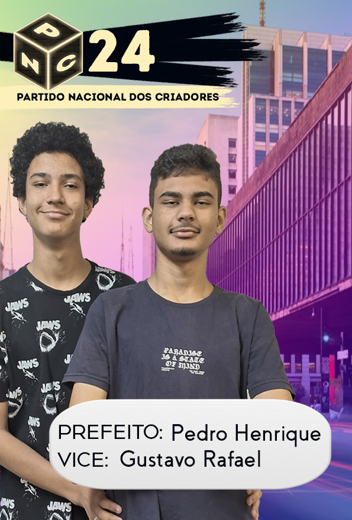
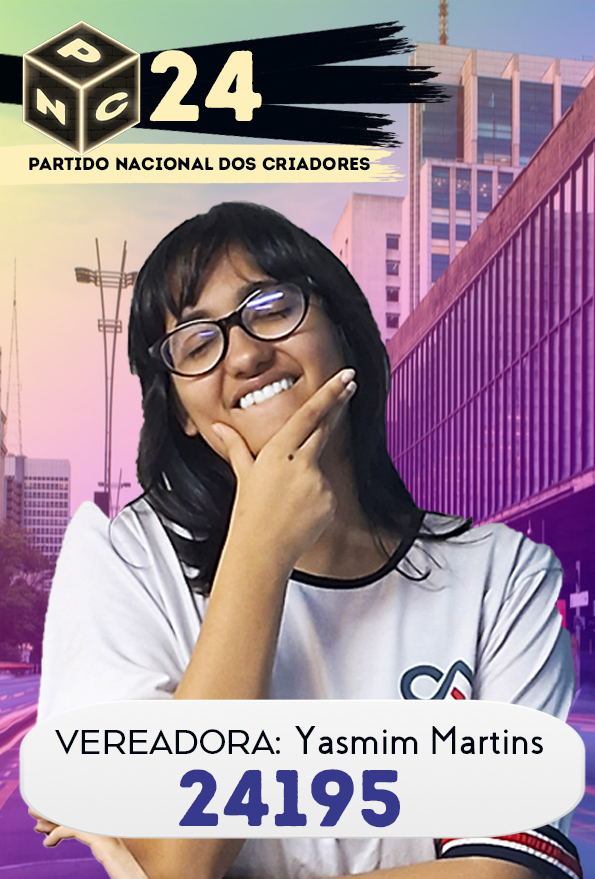
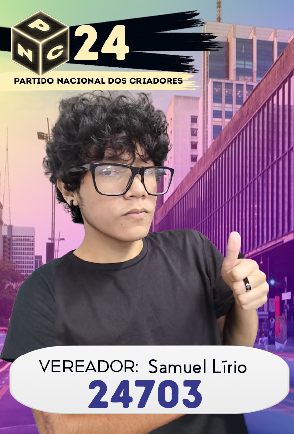
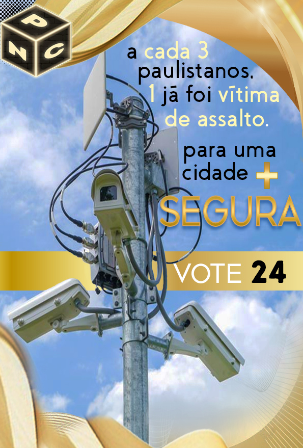
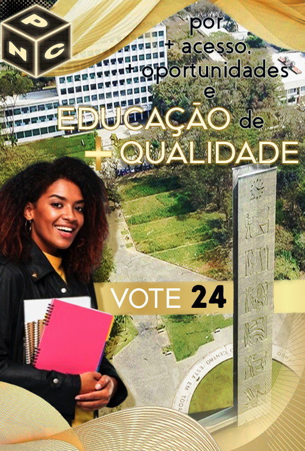
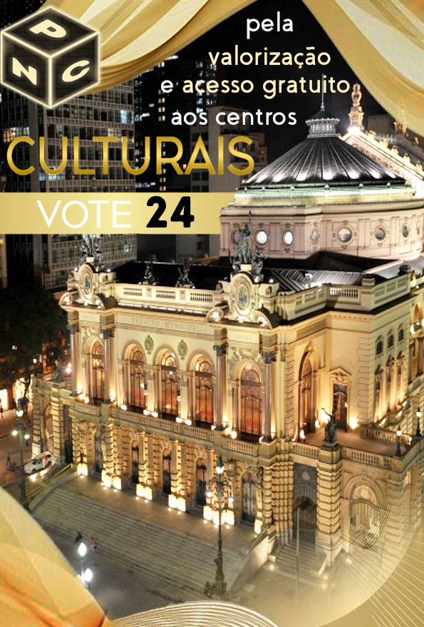
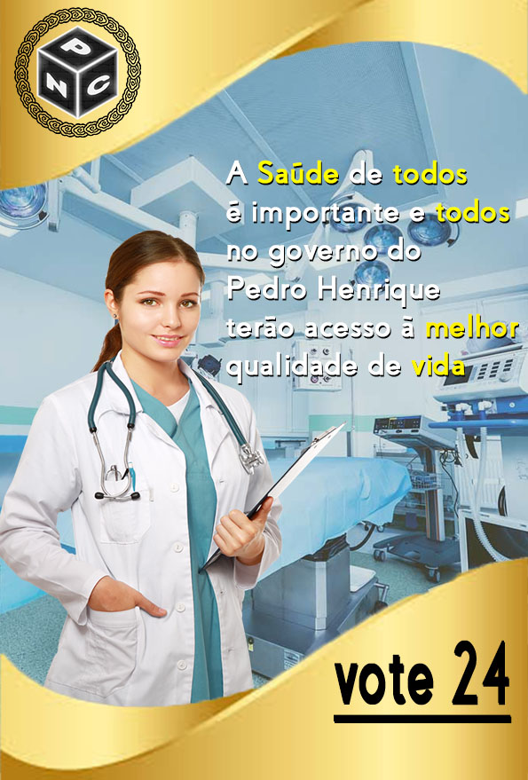
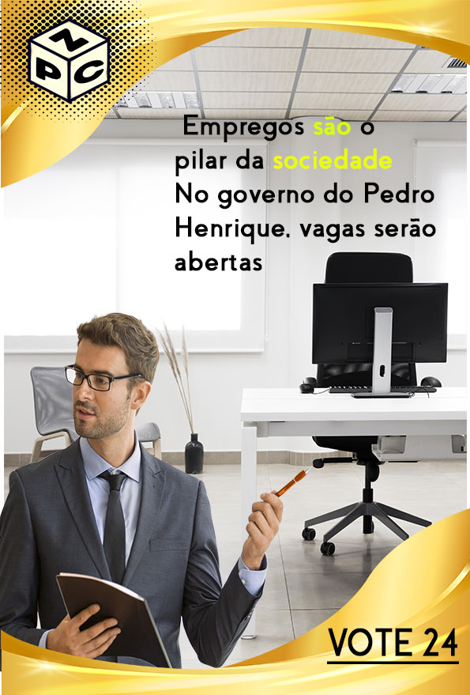
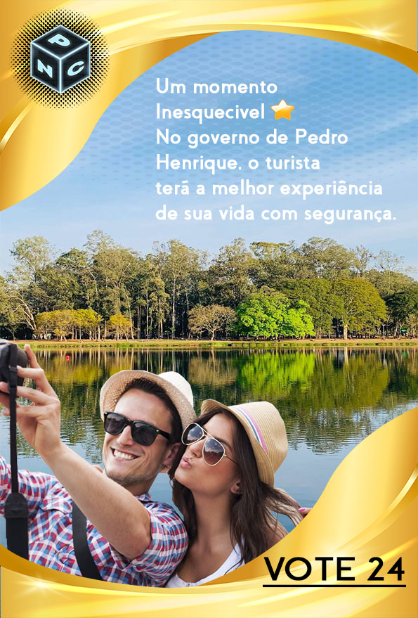

Candidatos
Pedro Henrique Custódio Brito:
Prefeito

Gustavo Rafael do Nascimento Sobral:
Vice-Prefeito
Yasmim Martins Kruth Nappi:
Vereadora

Samuel Lírio Dayne:
Vereador

Prefeito

Vice-Prefeito
Vereadora

Vereador







O Partido Nacional dos Criadores (PNC) surgiu no cenário político brasileiro com uma proposta ousada e inovadora, fundada em princípios de empreendedorismo, inovação tecnológica e apoio ao pequeno e médio criador, seja ele rural ou urbano. O partido nasceu em 2018, em São Paulo, como uma resposta à crescente demanda por políticas públicas voltadas à promoção de iniciativas autossustentáveis e de suporte ao microempresário. Embora tenha como base o apoio ao setor agropecuário, o PNC defende um conceito amplo de "criadores", abrangendo desde agricultores até empreendedores criativos e inovadores nas áreas de tecnologia e economia verde.
O PNC se define como um partido de centro, com inclinações pragmáticas e voltado para o desenvolvimento sustentável e econômico. A bandeira central do partido é a criação de políticas que incentivem a inovação tecnológica e a capacitação dos produtores rurais e urbanos, promovendo o desenvolvimento de novas tecnologias e infraestrutura que favoreçam o empreendedorismo em todas as áreas.
Nas eleições de 2024, o PNC resolveu lançar uma candidatura audaciosa para a prefeitura de São Paulo, encabeçada por Pedro Brito, um empresário de sucesso no setor de tecnologia agrícola e defensor ferrenho da sustentabilidade no campo. Pedro é um visionário que acredita no potencial de São Paulo para se tornar a capital da inovação no Brasil, conectando o campo e a cidade por meio de tecnologias que impulsionam o desenvolvimento sustentável.
Como vice-prefeito, o PNC apresenta Gustavo Sobral, um economista e professor universitário com vasta experiência em políticas públicas voltadas para o empreendedorismo e inclusão digital. Gustavo é conhecido por suas pesquisas sobre economia circular e sua capacidade de transformar pequenas ideias em grandes negócios através de parcerias público-privadas.
Samuel Dayne, um jovem criador de conteúdo digital que tem se destacado na defesa do empreendedorismo juvenil e da tecnologia como ferramentas de transformação social. Samuel tem uma grande base de apoio nas redes sociais e acredita que São Paulo precisa de uma renovação política que traga as demandas da juventude para o centro do debate.
Yasmim Nappi, engenheira ambiental e ativista na defesa da sustentabilidade urbana. Yasmim acredita na necessidade urgente de políticas públicas que incentivem práticas ambientais responsáveis e o desenvolvimento de uma infraestrutura verde para a cidade de São Paulo, com foco na qualidade de vida dos cidadãos.